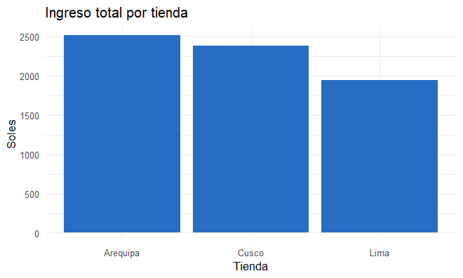
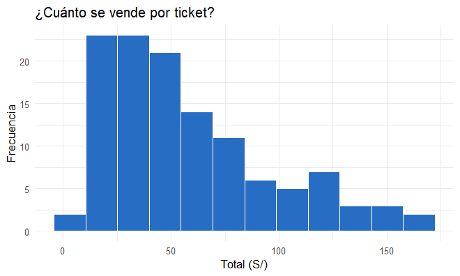
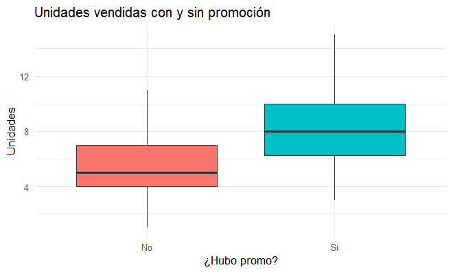
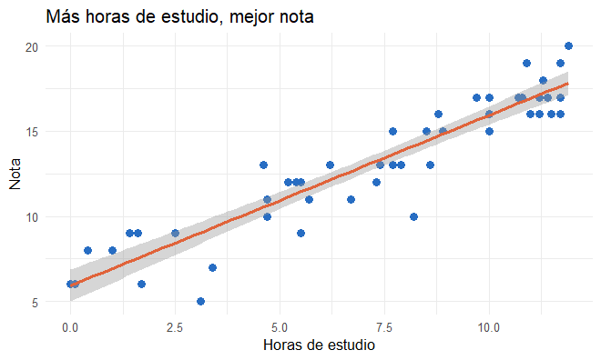

R desde cero
Aprende R paso a paso, sin saber programar. Cada tema trae un ejemplo con datos inventados, el resultado exacto que verás en pantalla, ejercicios con solución y preguntas tipo examen.
Cómo usar esta guía
Ctrl + Enter. Se aprende tecleando.Los casos que usaremos
Todos los datos son simulados (inventados), así que no necesitas descargar nada: el propio código los crea.
| Caso | Qué contiene | Dónde se usa |
|---|---|---|
| 🍽️ La cuenta del menú | Precios y personas | Nivel 1 |
🎓 Salón de clase alumnos | 8 alumnos: sección, horas de estudio y nota | Niveles 2 y 3 |
🛒 Bodegas ventas | 120 ventas en Lima, Arequipa y Cusco, con o sin promoción | Nivel 4 |
📚 Estudio vs nota estudio | 50 estudiantes: horas estudiadas y nota final | Nivel 4.5 |
Ruta de aprendizaje
En el repositorio está codigo/guia_completa.R con todos los ejemplos en orden. Ábrelo en RStudio y ve ejecutándolo mientras lees.
Qué es R y cómo instalarlo
Antes de escribir código, entiende qué es R, qué es RStudio y dónde se escribe cada cosa.
R es como el motor de un carro: hace los cálculos. RStudio es el tablero y el timón: el programa cómodo desde donde manejas ese motor. Necesitas los dos, pero siempre abrirás RStudio.
1 Instalación (en este orden)
- Instala R desde
cran.r-project.org→ elige tu sistema (Windows, Mac o Linux) → descarga e instala con “Siguiente, siguiente”. - Instala RStudio Desktop desde
posit.co/download/rstudio-desktop. - Abre RStudio (no R). Ve a File → New File → R Script para tener una hoja donde escribir.
2 Las 4 zonas de RStudio
| Zona | Para qué sirve | Analogía |
|---|---|---|
| Editor (arriba izq.) | Escribes y guardas tu código (archivo .R) | Tu cuaderno |
| Consola (abajo izq.) | R ejecuta el código y muestra el resultado | La calculadora |
| Entorno (arriba der.) | Lista lo que has guardado (variables, tablas) | Tu mochila |
| Archivos / Gráficos / Ayuda (abajo der.) | Ves gráficos, carpetas y la ayuda | La pizarra |
Pon el cursor en una línea del editor y presiona Ctrl + Enter (en Mac Cmd + Enter). Esa línea se ejecuta y el resultado aparece en la consola.
3 Tu primer código
print("Hola, R")
2 + 2[1] "Hola, R" [1] 4
¿Qué es ese [1]? Solo indica “este es el primer valor del resultado”. Puedes ignorarlo por ahora.
4 Comentarios y ayuda
# Esto es un comentario: R lo ignora. Sirve para explicar tu código.
?mean # abre la ayuda de la función mean (promedio)+ en la consolaR está esperando que termines algo: te faltó cerrar un paréntesis ) o unas comillas ". Presiona Esc y vuelve a escribir la línea.
Escribe en el editor 10 * 5 y ejecútalo con Ctrl + Enter. ¿Qué aparece?
Ver solución
10 * 5[1] 50
¿Qué programa abres para trabajar normalmente?
¿Para qué sirve el símbolo #?
R como calculadora, variables y tipos de datos
Aprende a hacer cuentas, guardar resultados con un nombre y reconocer qué tipo de dato tienes.
1 Operaciones básicas
5 + 3 # suma
9 / 2 # división
2 ^ 3 # potencia (2 al cubo)
10 %% 3 # resto de la división
10 %/% 3 # división entera
sqrt(16) # raíz cuadrada
round(3.14159, 2) # redondear a 2 decimales[1] 8 [1] 4.5 [1] 8 [1] 1 [1] 3 [1] 4 [1] 3.14
En R se escribe 4.5, nunca 4,5. La coma sirve para separar cosas, por ejemplo dentro de round(3.14159, 2).
2 Variables: guardar valores con nombre
Una variable es una caja con etiqueta. La flecha <- significa “guarda esto en la caja”. Se lee de derecha a izquierda: el valor entra a la caja.
La cuenta del menú
Cuatro amigos almuerzan un menú de S/ 12.50 cada uno. ¿Cuánto es el total y cuánto paga cada uno?
precio_menu <- 12.5
personas <- 4
total <- precio_menu * personas
total
total / personas[1] 50 [1] 12.5
Fíjate: al guardar (<-) R no muestra nada. Para ver el contenido, escribe solo el nombre (total).
R distingue mayúsculas: total y Total son cajas distintas. No uses espacios ni tildes; usa guion bajo: precio_menu. No pueden empezar con número.
3 Tipos de datos
| Tipo | Ejemplo | Nombre en R | Ojo |
|---|---|---|---|
| Número | 12.5 | numeric | Con o sin decimales |
| Entero | 5L | integer | La L lo fuerza a entero |
| Texto | "Ana" | character | Siempre entre comillas |
| Lógico | TRUE / FALSE | logical | Verdadero / falso, en mayúsculas |
nombre <- "Ana"
class(precio_menu)
class(nombre)
class(TRUE)
class(5L)[1] "numeric" [1] "character" [1] "logical" [1] "integer"
4 Comparaciones (dan TRUE o FALSE)
5 > 3 # mayor que
5 == 5 # igual (¡dos signos =!)
5 != 4 # distinto
(7 > 3) & (2 > 5) # Y: las dos deben cumplirse
(7 > 3) | (2 > 5) # O: basta con una[1] TRUE [1] TRUE [1] TRUE [1] FALSE [1] TRUE
= (un signo) se puede usar para guardar, igual que <-. Pero para comparar siempre es == (dos signos).
Error: object 'Total' not found (o objeto 'Total' no encontrado) → escribiste mal el nombre, cambiaste mayúsculas, o no ejecutaste la línea donde lo creaste.
Compras 3 kg de arroz a S/ 4.20 el kilo y 2 litros de aceite a S/ 9.90 el litro. Guarda cada precio en una variable y calcula el total.
Ver solución
arroz <- 4.20
aceite <- 9.90
total_compra <- 3 * arroz + 2 * aceite
total_compra[1] 32.4
¿Qué devuelve 10 %% 3?
¿Qué tipo de dato es "25" (con comillas)?
Vectores, factores y listas
Ahora guardarás muchos valores en una sola variable y harás cálculos con todos a la vez.
1 Vectores
Un vector es una fila de casilleros numerados, todos con el mismo tipo de dato. Se crea con c(), que significa “combinar”.
Las notas de 5 alumnos
notas <- c(14, 18, 9, 16, 11)
notas
notas[2] # el casillero 2
notas[c(1, 3)] # casilleros 1 y 3
notas[-1] # todos menos el 1[1] 14 18 9 16 11 [1] 18 [1] 14 9 [1] 18 9 16 11
El primer elemento es notas[1], no notas[0] como en otros lenguajes.
2 Funciones de resumen
length(notas) # cuántos hay
mean(notas) # promedio
sum(notas) # suma
max(notas) # máximo
min(notas) # mínimo[1] 5 [1] 13.6 [1] 68 [1] 18 [1] 9
3 Operar y filtrar todo a la vez
notas + 1 # bono de 1 punto a todos
notas >= 11 # ¿quién aprobó?
notas[notas >= 11] # solo las notas aprobatorias
sum(notas >= 11) # cuántos aprobaron[1] 15 19 10 17 12 [1] TRUE TRUE FALSE TRUE TRUE [1] 14 18 16 11 [1] 4
sum(condición) cuenta cuántos cumplen, porque R trata TRUE como 1 y FALSE como 0. Y mean(condición) te da la proporción.
4 Secuencias útiles
1:5 # del 1 al 5
seq(0, 20, by = 5) # de 0 a 20 de 5 en 5
rep("A", 3) # repetir[1] 1 2 3 4 5 [1] 0 5 10 15 20 [1] "A" "A" "A"
c(1, "dos", TRUE)[1] "1" "dos" "TRUE"
5 Factores: categorías
Un factor es un vector de categorías (sección, sexo, ciudad). R sabe cuáles son los grupos posibles.
seccion <- factor(c("A", "B", "A", "A", "B"))
levels(seccion) # categorías posibles
table(seccion) # cuántos hay en cada una[1] "A" "B" seccion A B 3 2
6 Listas: una mochila con de todo
A diferencia del vector, una lista sí puede guardar cosas de tipos distintos. Se accede con $.
alumno <- list(nombre = "Ana", edad = 20, notas = c(14, 18))
alumno$nombre
alumno$notas[1] "Ana" [1] 14 18
Guarda las temperaturas de la semana 18, 22, 25, 19, 21. Calcula el promedio y muestra solo los días más calurosos que el promedio.
Ver solución
temp <- c(18, 22, 25, 19, 21)
mean(temp)
temp[temp > mean(temp)][1] 21 [1] 22 25
Si x <- c(5, 8, 2), ¿qué devuelve x[2]?
¿Qué hace sum(notas >= 11)?
Data frames: tus tablas
La estructura más importante de R. Si entiendes este capítulo, entiendes la mitad del examen.
Un data frame es una hoja de Excel: cada fila es un caso (un alumno) y cada columna una característica (su nota). Por dentro, cada columna es un vector.
El salón de clase
Datos simulados de 8 alumnos: su sección, cuántas horas estudiaron y su nota (sobre 20).
alumnos <- data.frame(
nombre = c("Ana", "Bruno", "Carla", "Diego", "Elena", "Fabio", "Gina", "Hugo"),
seccion = c("A", "A", "B", "B", "A", "B", "A", "B"),
horas = c(10, 4, 8, 2, 12, 6, 9, 3),
nota = c(17, 10, 15, 8, 19, 12, 16, 9)
)
alumnosnombre seccion horas nota 1 Ana A 10 17 2 Bruno A 4 10 3 Carla B 8 15 4 Diego B 2 8 5 Elena A 12 19 6 Fabio B 6 12 7 Gina A 9 16 8 Hugo B 3 9
1 Explorar la tabla
str(alumnos) # estructura: columnas y sus tipos
nrow(alumnos) # número de filas
ncol(alumnos) # número de columnas
names(alumnos) # nombres de columnas
summary(alumnos$nota)'data.frame': 8 obs. of 4 variables: $ nombre : chr "Ana" "Bruno" "Carla" "Diego" ... $ seccion: chr "A" "A" "B" "B" ... $ horas : num 10 4 8 2 12 6 9 3 $ nota : num 17 10 15 8 19 12 16 9 [1] 8 [1] 4 [1] "nombre" "seccion" "horas" "nota" Min. 1st Qu. Median Mean 3rd Qu. Max. 8.00 9.75 13.50 13.25 16.25 19.00
Otras útiles: head(alumnos) muestra las 6 primeras filas y View(alumnos) abre la tabla como en Excel.
2 La regla de oro: tabla[filas, columnas]
Lo que va antes de la coma elige filas; lo que va después, columnas. Si dejas un lado vacío significa “todas”.
alumnos$nota # una columna (como vector)
alumnos[3, ] # fila 3, todas las columnas
alumnos[3, "nota"] # fila 3, columna nota[1] 17 10 15 8 19 12 16 9 nombre seccion horas nota 3 Carla B 8 15 [1] 15
3 Filtrar filas con una condición
# ¿Quiénes aprobaron?
alumnos[alumnos$nota >= 11, ]
# Nombre y nota de la sección A
alumnos[alumnos$seccion == "A", c("nombre", "nota")]nombre seccion horas nota 1 Ana A 10 17 3 Carla B 8 15 5 Elena A 12 19 6 Fabio B 6 12 7 Gina A 9 16 nombre nota 1 Ana 17 2 Bruno 10 5 Elena 19 7 Gina 16
4 Crear columnas y ordenar
alumnos$aprobado <- alumnos$nota >= 11 # nueva columna TRUE/FALSE
alumnos[order(-alumnos$nota), c("nombre", "nota")] # de mayor a menornombre nota 5 Elena 19 1 Ana 17 7 Gina 16 3 Carla 15 6 Fabio 12 2 Bruno 10 8 Hugo 9 4 Diego 8
order() ordena de menor a mayor; el signo - lo invierte.
undefined columns selected → olvidaste la coma. alumnos[alumnos$nota >= 11] está mal; lo correcto es alumnos[alumnos$nota >= 11, ].
Crea un data frame productos con Arroz (4.20), Aceite (9.90), Leche (4.50) y Pan (0.50). Agrega una columna con_igv con el precio más 18% de IGV.
Ver solución
productos <- data.frame(
producto = c("Arroz", "Aceite", "Leche", "Pan"),
precio = c(4.2, 9.9, 4.5, 0.5)
)
productos$con_igv <- productos$precio * 1.18
productosproducto precio con_igv 1 Arroz 4.2 4.956 2 Aceite 9.9 11.682 3 Leche 4.5 5.310 4 Pan 0.5 0.590
¿Qué devuelve alumnos[2, ]?
¿Cómo obtienes la columna horas?
Condicionales, bucles y funciones
Enseña a R a tomar decisiones, a repetir tareas y a crear tus propias herramientas.
1 if / else: tomar una decisión
“Si la nota es 11 o más, di Aprobado; si no, di Desaprobado.” La condición va entre ( ) y lo que se hace, entre { }.
nota <- 13
if (nota >= 11) {
print("Aprobado")
} else {
print("Desaprobado")
}[1] "Aprobado"
2 ifelse: decidir para toda una columna
if evalúa un solo valor. Para una columna entera usa ifelse(condición, si_sí, si_no).
alumnos$estado <- ifelse(alumnos$nota >= 11, "Aprobado", "Desaprobado")
alumnos[, c("nombre", "nota", "estado")]nombre nota estado 1 Ana 17 Aprobado 2 Bruno 10 Desaprobado 3 Carla 15 Aprobado 4 Diego 8 Desaprobado 5 Elena 19 Aprobado 6 Fabio 12 Aprobado 7 Gina 16 Aprobado 8 Hugo 9 Desaprobado
3 for: repetir
for (i in 1:3) {
print(paste("Vuelta número", i))
}
for (n in alumnos$nombre[1:3]) {
print(paste("Hola,", n))
}[1] "Vuelta número 1" [1] "Vuelta número 2" [1] "Vuelta número 3" [1] "Hola, Ana" [1] "Hola, Bruno" [1] "Hola, Carla"
paste() une textos con un espacio. La variable i (o n) toma un valor distinto en cada vuelta.
Como R opera vectores completos (notas + 1), muchas veces el for no es necesario. En el examen suele bastar con entender cómo funciona.
4 Crear tus propias funciones
Una función es una receta: recibe ingredientes (argumentos), hace algo y devuelve un resultado. Lo último que se calcula dentro es lo que devuelve.
con_igv <- function(precio, tasa = 0.18) {
precio * (1 + tasa)
}
con_igv(100) # usa la tasa por defecto (18%)
con_igv(100, 0.10) # cambia la tasa a 10%[1] 118 [1] 110
Función que califica
calificar <- function(nota) {
if (nota >= 17) {
"Excelente"
} else if (nota >= 11) {
"Aprobado"
} else {
"Desaprobado"
}
}
calificar(18)
calificar(12)
calificar(7)
sapply(alumnos$nota, calificar) # aplicarla a cada nota[1] "Excelente" [1] "Aprobado" [1] "Desaprobado" [1] "Excelente" "Desaprobado" "Aprobado" "Desaprobado" [5] "Excelente" "Aprobado" "Aprobado" "Desaprobado"
sapply(vector, función) aplica la función a cada elemento, uno por uno.
the condition has length > 1 → usaste if con una columna completa. Para columnas usa ifelse().
Escribe una función es_par(n) que devuelva TRUE si el número es par. Pista: un número es par si el resto de dividirlo entre 2 es 0.
Ver solución
es_par <- function(n) {
n %% 2 == 0
}
es_par(4)
es_par(7)[1] TRUE [1] FALSE
Quieres marcar “Alto/Bajo” en toda la columna horas. ¿Qué usas?
Con con_igv <- function(precio, tasa = 0.18), ¿qué da con_igv(200)?
Paquetes, importar datos y dplyr
Trabaja con una base de datos más grande y resúmela con “verbos” fáciles de leer.
1 Paquetes
Un paquete es una app que le agrega funciones a R. Se instala una sola vez (como descargar la app) y se carga en cada sesión (como abrirla).
install.packages("dplyr") # UNA sola vez, con comillas
install.packages("ggplot2") # UNA sola vez
library(dplyr) # cada vez que abres RStudio, sin comillas
library(ggplot2)could not find function "filter" (o no se pudo encontrar la función) → te olvidaste de library(dplyr).
2 Simular los datos de ventas
Bodegas en 3 ciudades
Creamos 120 ventas al azar. La semilla set.seed(123) hace que el “azar” salga siempre igual, así tus resultados coinciden con los de esta guía.
set.seed(123)
n <- 120
ventas <- data.frame(
tienda = sample(c("Lima", "Arequipa", "Cusco"), n, replace = TRUE),
producto = sample(c("Arroz", "Aceite", "Leche", "Pan"), n, replace = TRUE),
promo = sample(c("Si", "No"), n, replace = TRUE),
precio = round(runif(n, min = 2, max = 15), 1)
)
# con promoción se venden más unidades (en promedio 8 vs 5)
ventas$cantidad <- rpois(n, lambda = ifelse(ventas$promo == "Si", 8, 5))
head(ventas)tienda producto promo precio cantidad 1 Cusco Pan Si 3.2 13 2 Cusco Aceite Si 4.7 7 3 Cusco Leche Si 14.7 8 4 Arequipa Aceite Si 5.9 4 5 Cusco Leche Si 11.4 11 6 Arequipa Pan No 12.2 4
| Función | Qué hace |
|---|---|
sample(opciones, n, replace = TRUE) | Elige al azar entre opciones (como sacar papelitos) |
runif(n, min, max) | Números al azar entre un mínimo y un máximo |
rpois(n, lambda) | Conteos al azar alrededor de un promedio |
rnorm(n, media, desv) | Números con forma de campana (distribución normal) |
3 Importar y exportar archivos
En la vida real los datos vienen de un archivo. Así se guarda y se vuelve a leer un CSV:
write.csv(ventas, "ventas.csv", row.names = FALSE) # guardar
ventas <- read.csv("ventas.csv") # leer
# Excel: install.packages("readxl"); library(readxl)
# datos <- read_excel("ventas.xlsx")R busca el archivo en tu carpeta de trabajo. Mírala con getwd(). Lo más fácil: crea un Proyecto (File → New Project) y pon ahí tus archivos.
4 Los 5 verbos de dplyr
| Verbo | Qué hace | Pregunta que responde |
|---|---|---|
filter() | Elige filas | ¿Solo las ventas de Lima? |
select() | Elige columnas | ¿Solo producto y precio? |
mutate() | Crea o cambia columnas | ¿Cuál es el total de cada venta? |
arrange() | Ordena | ¿Cuáles fueron las ventas más grandes? |
group_by() + summarise() | Resume por grupos | ¿Cuánto vendió cada tienda? |
|>Pasa el resultado de un paso al siguiente. Léelo como “y luego”: “toma ventas, y luego filtra Lima, y luego muestra 3 filas”. (También verás %>%, que hace lo mismo.)
ventas |>
filter(tienda == "Lima") |>
head(3)
ventas |>
select(producto, precio) |>
head(3)tienda producto promo precio cantidad 1 Lima Leche Si 3.3 10 2 Lima Leche No 14.8 4 3 Lima Aceite Si 9.5 3 producto precio 1 Pan 3.2 2 Aceite 4.7 3 Leche 14.7
ventas <- ventas |>
mutate(total = precio * cantidad) # nueva columna
ventas |>
arrange(desc(total)) |> # desc() = de mayor a menor
head(3)tienda producto promo precio cantidad total 1 Lima Pan Si 15.0 11 165.0 2 Cusco Pan Si 14.7 11 161.7 3 Arequipa Aceite Si 10.9 14 152.6
5 Resumir por grupos (¡lo más preguntado!)
ventas |>
group_by(tienda) |>
summarise(n_ventas = n(),
ingreso = sum(total),
promedio = mean(total))# A tibble: 3 × 4 tienda n_ventas ingreso promedio <chr> <int> <dbl> <dbl> 1 Arequipa 44 2513. 57.1 2 Cusco 40 2378. 59.5 3 Lima 36 1947 54.1
Un tibble es un data frame con mejor presentación. n() cuenta filas de cada grupo.
# ¿Qué producto genera más ingreso cuando hay promoción?
ventas |>
filter(promo == "Si") |>
group_by(producto) |>
summarise(ingreso = sum(total)) |>
arrange(desc(ingreso))
# Atajo para contar combinaciones
ventas |> count(tienda, promo)# A tibble: 4 × 2
producto ingreso
<chr> <dbl>
1 Pan 1634.
2 Aceite 1167.
3 Leche 994.
4 Arroz 915.
tienda promo n
1 Arequipa No 19
2 Arequipa Si 25
3 Cusco No 14
4 Cusco Si 26
5 Lima No 17
6 Lima Si 19Tradúcelo en voz alta: “Toma ventas, y luego filtra promo Sí, y luego agrupa por producto, y luego suma el total, y luego ordena de mayor a menor”.
¿Cuántas ventas hubo en Cusco con promoción? Usa filter() con dos condiciones separadas por coma y luego nrow().
Ver solución
ventas |>
filter(tienda == "Cusco", promo == "Si") |>
nrow()[1] 26
Coincide con la tabla de count(): Cusco / Si / 26.
Quieres quedarte solo con las columnas tienda y total. ¿Qué verbo usas?
¿Cada cuánto se ejecuta install.packages("dplyr")?
Gráficos con ggplot2
Convierte tus tablas en gráficos claros, capa por capa.
ggplot(datos, aes(x, y)) = el lienzo y qué va en cada eje
+ geom_…() = el tipo de dibujo (barras, puntos…)
+ labs() y + theme_…() = títulos y estilo.
Las capas se suman con +, al final de cada línea.
| Geometría | Gráfico | Úsalo para… |
|---|---|---|
geom_col() | Barras | Comparar cantidades entre grupos |
geom_histogram() | Histograma | Ver cómo se reparte una variable numérica |
geom_boxplot() | Caja y bigotes | Comparar distribuciones entre grupos |
geom_point() | Dispersión | Relación entre dos variables numéricas |
geom_line() | Líneas | Evolución en el tiempo |
1 Barras: ingreso por tienda
resumen <- ventas |>
group_by(tienda) |>
summarise(ingreso = sum(total))
ggplot(resumen, aes(x = tienda, y = ingreso)) +
geom_col(fill = "#276dc3") +
labs(title = "Ingreso total por tienda", x = "Tienda", y = "Soles") +
theme_minimal()
2 Histograma: ¿cuánto se vende por ticket?
ggplot(ventas, aes(x = total)) +
geom_histogram(bins = 12, fill = "#276dc3", color = "white") +
labs(title = "¿Cuánto se vende por ticket?", x = "Total (S/)", y = "Frecuencia") +
theme_minimal()
Fíjate que en el histograma solo va x: el eje y (frecuencia) lo calcula R.
3 Boxplot: ¿la promoción vende más?
ggplot(ventas, aes(x = promo, y = cantidad, fill = promo)) +
geom_boxplot() +
labs(title = "Unidades vendidas con y sin promoción",
x = "¿Hubo promo?", y = "Unidades") +
theme_minimal() +
theme(legend.position = "none")
La línea del medio es la mediana. La caja contiene el 50% central de los datos. Los bigotes llegan hasta los valores típicos más extremos; los puntos sueltos serían valores atípicos.
4 Guardar el gráfico
ggsave("grafico_tiendas.png", width = 7, height = 5) # guarda el último gráficoPoner el + al inicio de la línea siguiente. R cree que el gráfico terminó. El + siempre va al final de la línea.
Haz un gráfico de barras que muestre cuántas ventas hubo de cada producto. Pista: con geom_bar() R cuenta solo, así que únicamente necesitas x.
Ver solución
ggplot(ventas, aes(x = producto)) +
geom_bar(fill = "#276dc3") +
labs(title = "Ventas por producto", x = "Producto", y = "Número de ventas") +
theme_minimal()geom_bar() cuenta filas; geom_col() usa una columna y que tú ya calculaste.
Quieres ver la relación entre horas de estudio y nota. ¿Qué geometría usas?
¿Qué va dentro de aes()?
Estadística básica
Describe tus datos, maneja valores faltantes, compara grupos y haz tu primera regresión. Aquí lo clave es interpretar.
¿Estudiar más sube la nota?
Simulamos 50 estudiantes: horas de estudio (0 a 12) y su nota. Por construcción, cada hora suma aproximadamente 1 punto, con algo de “ruido”.
set.seed(42)
estudio <- data.frame(horas = round(runif(50, 0, 12), 1))
estudio$nota <- round(6 + 1 * estudio$horas + rnorm(50, 0, 1.5))
estudio$nota <- pmin(estudio$nota, 20) # la nota máxima es 20
head(estudio)horas nota 1 11.0 16 2 11.2 17 3 3.4 7 4 10.0 17 5 7.7 13 6 6.2 13
1 Estadística descriptiva
mean(estudio$nota) # media (promedio)
median(estudio$nota) # mediana (el valor del medio)
sd(estudio$nota) # desviación estándar (cuánto varían)
quantile(estudio$nota) # cuartiles[1] 13.12 [1] 13 [1] 3.936434 0% 25% 50% 75% 100% 5.00 10.25 13.00 16.00 20.00
| Medida | Qué significa aquí |
|---|---|
| Media 13.12 | En promedio, los alumnos sacaron 13.1 |
| Mediana 13 | La mitad sacó 13 o menos; la otra mitad, 13 o más |
| Desv. estándar 3.94 | Las notas suelen alejarse unos 4 puntos del promedio |
| Cuartil 25% = 10.25 | El 25% de alumnos sacó 10.25 o menos |
summary(estudio$nota) te da mínimo, cuartiles, mediana, media y máximo de una sola vez.
2 Datos faltantes (NA)
NA significa “no hay dato” (por ejemplo, un alumno que faltó al examen).
v <- c(15, NA, 12, 18)
mean(v) # ¡da NA!
mean(v, na.rm = TRUE) # ignora los NA
is.na(v) # ¿dónde hay NA?
sum(is.na(v)) # cuántos NA hay[1] NA [1] 15 [1] FALSE TRUE FALSE FALSE [1] 1
Si un cálculo te devuelve NA, la respuesta es agregar na.rm = TRUE (“NA remove”).
3 Correlación
cor(estudio$horas, estudio$nota)[1] 0.9269005
| Valor de r | Interpretación |
|---|---|
| cerca de +1 | Fuerte y positiva: si una sube, la otra también |
| cerca de 0 | No hay relación lineal |
| cerca de −1 | Fuerte y negativa: si una sube, la otra baja |
Aquí: r = 0.93 → relación positiva muy fuerte entre horas de estudio y nota.
Que dos cosas se muevan juntas no prueba que una cause la otra. En este caso lo sabemos solo porque nosotros simulamos los datos así.
4 Prueba t: ¿dos grupos son diferentes?
Volvemos a las bodegas: ¿con promoción se venden más unidades, o la diferencia es casualidad?
t.test(cantidad ~ promo, data = ventas) Welch Two Sample t-test
data: cantidad by promo
t = -6.0687, df = 114.15, p-value = 1.724e-08
alternative hypothesis: true difference in means between group No and group Si is not equal to 0
95 percent confidence interval:
-3.918640 -1.989931
sample estimates:
mean in group No mean in group Si
5.260000 8.214286 p < 0.05 → la diferencia es estadísticamente significativa (difícil que sea casualidad).
p ≥ 0.05 → no hay evidencia suficiente de diferencia.
Aquí p = 1.724e-08 = 0.00000001724 (muchísimo menor que 0.05). Conclusión: con promoción se venden en promedio 8.2 unidades frente a 5.3 sin promoción, y esa diferencia es significativa.
1.724e-08 significa 1.724 × 10⁻⁸: mueve la coma 8 lugares a la izquierda. Si ves e- con un número grande, el valor es casi cero.
5 Regresión lineal simple
La regresión encuentra la recta que mejor resume la relación: nota = intercepto + pendiente × horas. En R se escribe lm(y ~ x), que se lee “y explicada por x”.
modelo <- lm(nota ~ horas, data = estudio)
summary(modelo)Coefficients:
Estimate Std. Error t value Pr(>|t|)
(Intercept) 5.93024 0.47024 12.61 <2e-16 ***
horas 1.00024 0.05846 17.11 <2e-16 ***
---
Residual standard error: 1.493 on 48 degrees of freedom
Multiple R-squared: 0.8591, Adjusted R-squared: 0.8562
F-statistic: 292.8 on 1 and 48 DF, p-value: < 2.2e-16| Dato | Valor | Interpretación para el examen |
|---|---|---|
| Intercepto | 5.93 | Nota esperada de alguien que estudia 0 horas |
| Pendiente (horas) | 1.00 | Por cada hora extra de estudio, la nota sube ~1 punto |
| Pr(>|t|) de horas | < 2e-16 | Menor a 0.05 → las horas influyen significativamente |
| R-squared | 0.86 | Las horas explican el 86% de la variación de las notas |
# ¿Qué nota se espera con 8 horas de estudio?
predict(modelo, newdata = data.frame(horas = 8))1 13.9322
Comprobación a mano: 5.93 + 1.00 × 8 ≈ 13.93 ✔️
ggplot(estudio, aes(x = horas, y = nota)) +
geom_point(color = "#276dc3", size = 2.5) +
geom_smooth(method = "lm", color = "#e0633a") +
labs(title = "Más horas de estudio, mejor nota",
x = "Horas de estudio", y = "Nota") +
theme_minimal()
Usando el modelo, ¿qué nota se espera para alguien que estudia 10 horas? Hazlo con predict() y compruébalo a mano.
Ver solución
predict(modelo, newdata = data.frame(horas = 10))A mano: 5.93024 + 1.00024 × 10 = 15.93.
Una prueba t da p-value = 0.32. ¿Qué concluyes?
En lm(nota ~ horas), la pendiente es 1.00. ¿Qué significa?
mean(c(10, NA, 14)) devuelve NA. ¿Cómo lo arreglas?
Simulacro de examen
Seis preguntas como las de un examen real, usando los casos de la guía. Intenta resolverlas en RStudio antes de abrir la solución.
Ejecuta los bloques que crean alumnos (cap. 4), ventas con la columna total (cap. 6) y estudio (cap. 8). O abre codigo/guia_completa.R y ejecútalo completo con Ctrl + Shift + Enter.
En la tabla alumnos, ¿cuántos aprobaron (nota ≥ 11)?
Ver solución
sum(alumnos$nota >= 11)[1] 5
Respuesta: 5 alumnos (Ana, Carla, Elena, Fabio y Gina).
¿Cuál es la nota promedio de cada sección? ¿Qué sección rindió mejor?
Ver solución
# Opción con R base
tapply(alumnos$nota, alumnos$seccion, mean)
# Opción con dplyr
alumnos |>
group_by(seccion) |>
summarise(promedio = mean(nota))A B 15.5 11.0
Respuesta: la sección A (15.5) rindió mejor que la B (11.0).
En ventas, ¿qué tienda generó más ingreso total y cuánto?
Ver solución
ventas |>
group_by(tienda) |>
summarise(ingreso = sum(total)) |>
arrange(desc(ingreso))Respuesta: Arequipa, con S/ 2513.40 (le siguen Cusco con S/ 2378.30 y Lima con S/ 1947.00).
¿La promoción aumenta significativamente las unidades vendidas? Justifica con una prueba estadística.
Ver solución
t.test(cantidad ~ promo, data = ventas)Respuesta: Sí. El p-valor es 1.7 × 10⁻⁸, menor que 0.05. Con promoción se venden en promedio 8.21 unidades y sin ella 5.26: la diferencia es estadísticamente significativa.
En estudio, calcula e interpreta la correlación entre horas y nota.
Ver solución
cor(estudio$horas, estudio$nota)[1] 0.9269005
Respuesta: r ≈ 0.93: relación lineal positiva y muy fuerte. A más horas de estudio, mayor nota.
Ajusta una regresión de nota según horas. Interpreta la pendiente y el R² y predice la nota con 8 horas.
Ver solución
modelo <- lm(nota ~ horas, data = estudio)
summary(modelo)
predict(modelo, newdata = data.frame(horas = 8))Respuesta:
- Pendiente 1.00: cada hora adicional de estudio aumenta la nota en aproximadamente 1 punto (p < 0.05, significativo).
- R² = 0.86: las horas explican el 86% de la variación en las notas.
- Predicción con 8 horas: 13.93.
1) Muestra el código. 2) Copia el número clave del resultado. 3) Escribe una frase de interpretación en palabras normales (“con promoción se vende más…”). Muchos pierden puntos por quedarse solo en el número.
Chuleta final
Todo lo esencial en una sola pantalla para el repaso de última hora. Puedes imprimirla.
🧮 Básico
x <- 5 | guardar |
%% | resto |
== / != | igual / distinto |
& / | | y / o |
class(x) | tipo de dato |
round(x, 2) | redondear |
📦 Vectores
c(1, 2, 3) | crear |
x[2] | elemento 2 |
x[x > 10] | filtrar |
sum(x > 10) | contar |
length(x) | cuántos |
table(x) | frecuencias |
🗂️ Data frames
df[filas, cols] | regla de oro |
df$col | una columna |
str(df) | estructura |
summary(df) | resumen |
nrow / ncol | filas / cols |
df[order(-df$x), ] | ordenar desc. |
🔁 Control
if (c) {} else {} | un valor |
ifelse(c, a, b) | toda una columna |
for (i in 1:n) {} | repetir |
function(x) {} | crear función |
sapply(x, f) | aplicar a cada uno |
🛠️ dplyr
filter() | filas |
select() | columnas |
mutate() | nueva columna |
arrange(desc()) | ordenar |
group_by() |> summarise() | resumir |
count() | contar grupos |
📊 ggplot2
ggplot(df, aes(x, y)) | lienzo |
geom_col / geom_bar | barras |
geom_histogram | histograma |
geom_boxplot | cajas |
geom_point | dispersión |
labs() + theme_minimal() | títulos y estilo |
📈 Estadística
mean / median / sd | descriptivos |
na.rm = TRUE | ignorar NA |
cor(x, y) | correlación (−1 a 1) |
t.test(y ~ g, data) | comparar 2 grupos |
lm(y ~ x, data) | regresión |
predict(m, newdata) | predecir |
🎯 Interpretar
| p < 0.05 | significativo |
| p ≥ 0.05 | no significativo |
| r ≈ ±1 | relación fuerte |
| r ≈ 0 | sin relación lineal |
| pendiente | cambio de y por cada 1 de x |
| R² | % de variación explicada |
🐞 Errores frecuentes
object not found | nombre mal escrito o no ejecutado |
could not find function | falta library() |
+ en consola | falta cerrar ) o " → Esc |
undefined columns | falta la coma en df[ , ] |
cannot open file | revisa getwd() |
Reportes con Quarto o R Markdown, apps con Shiny, regresión múltiple y logística, y paquetes como lubridate (fechas) y stringr (texto).
🎉 ¡Terminaste la guía! Mucha suerte en el examen.